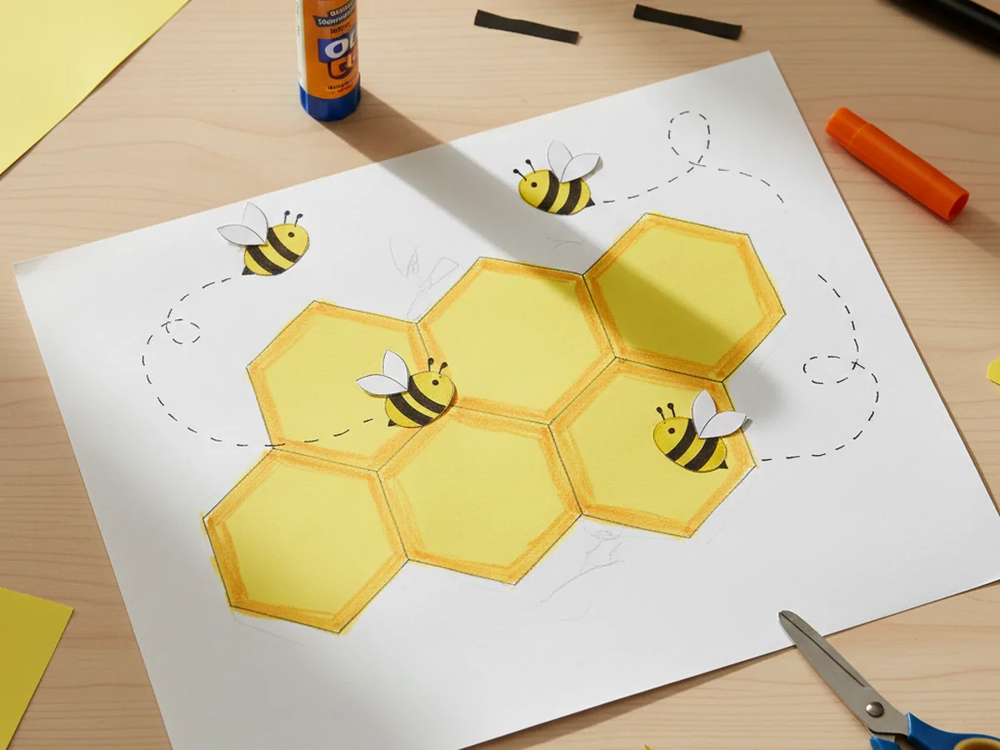
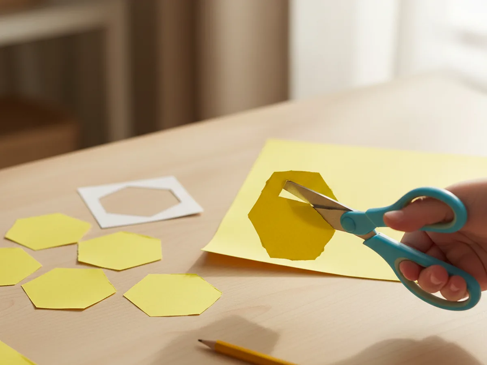
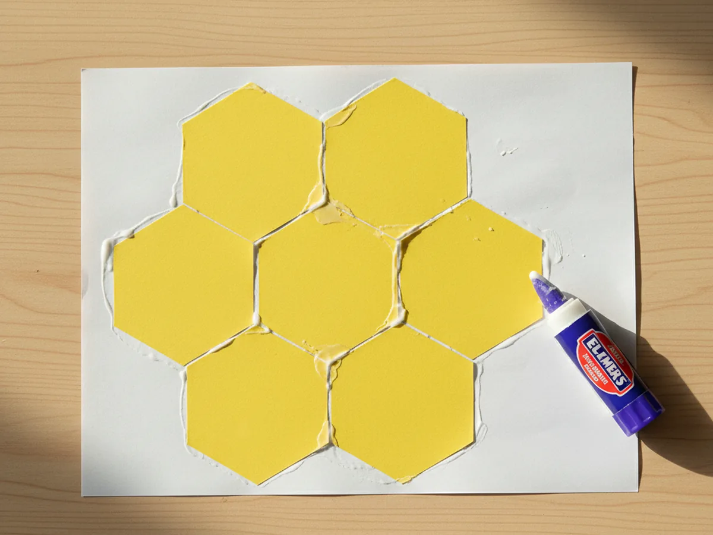
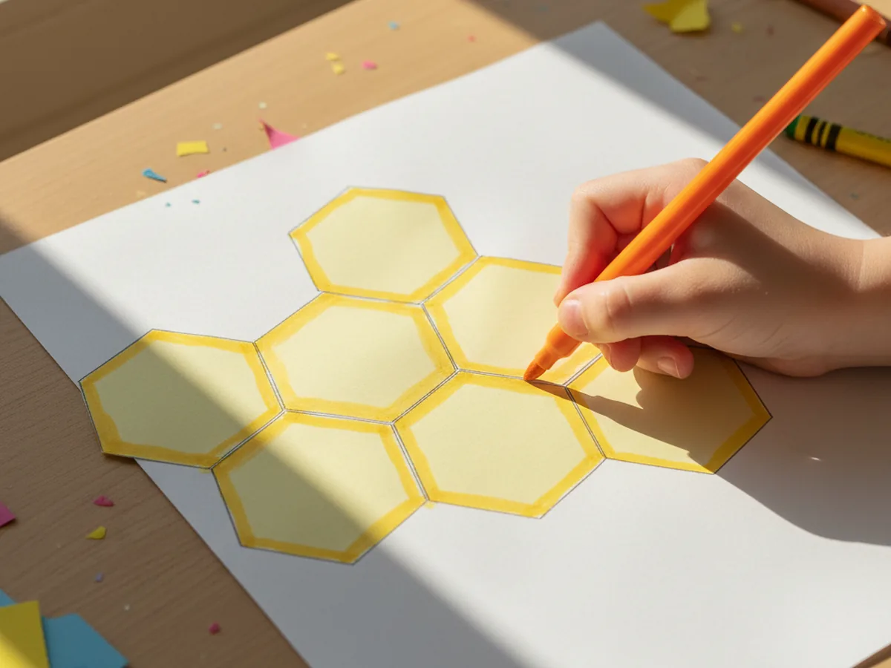
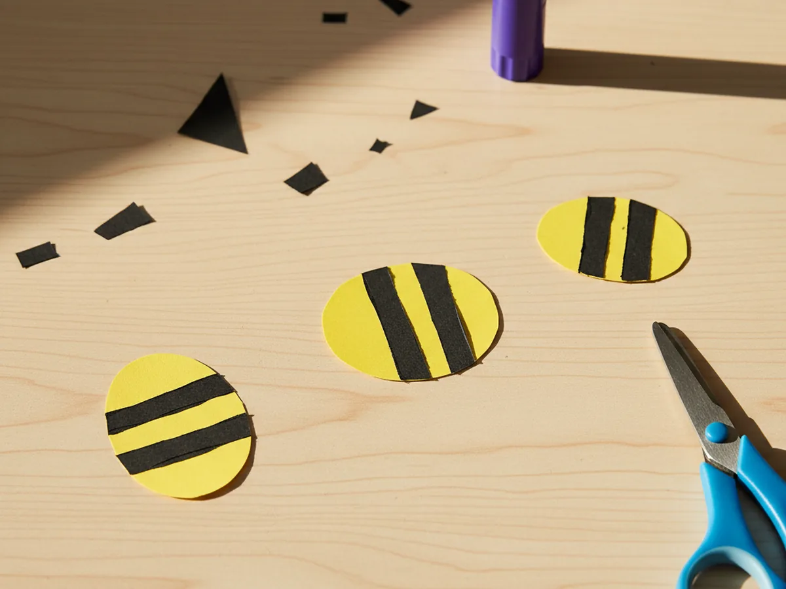
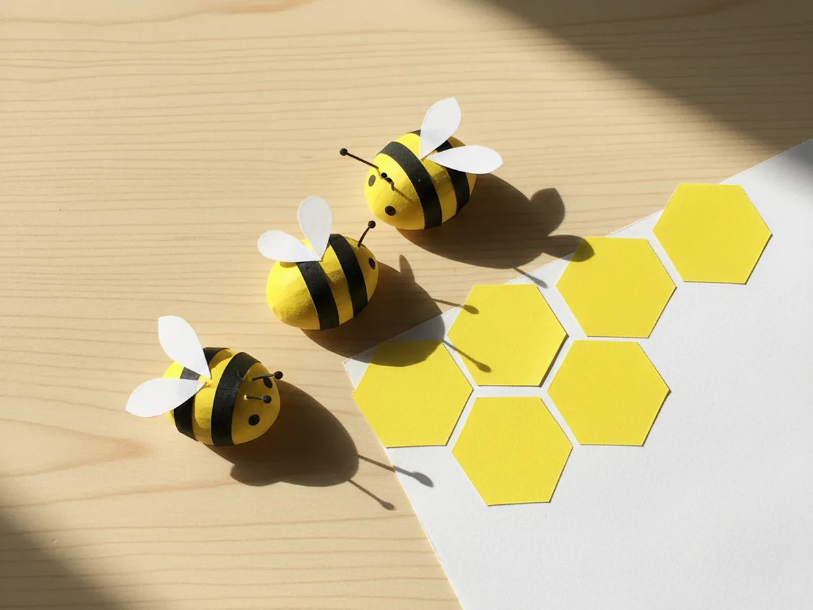
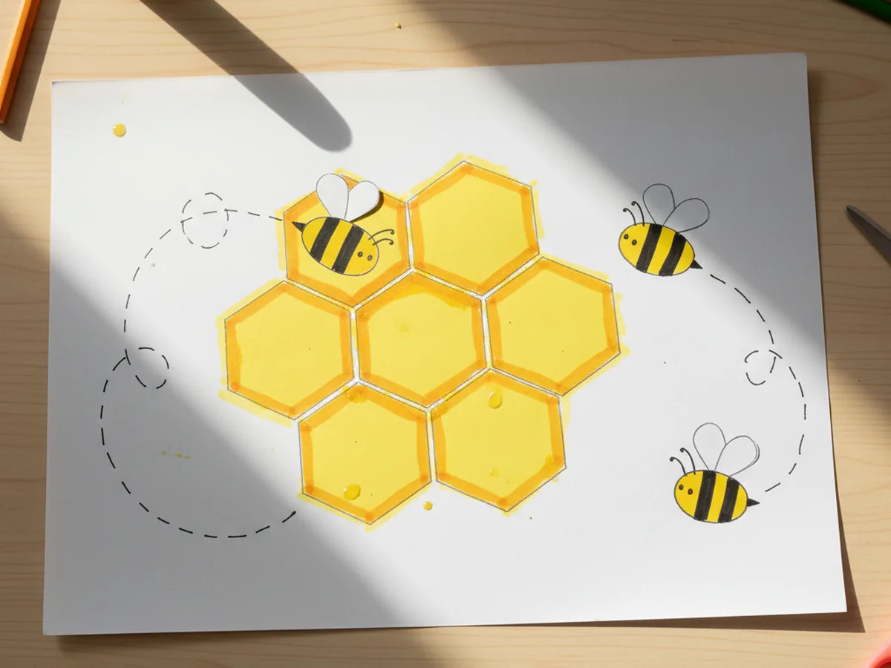

This sweet honeycomb craft paper project is one of those bright little builds that makes any wall feel cheerful in about half an hour. You cut a small pile of yellow paper hexagons, glue them together in a honeycomb cluster, shade the centers with a soft golden glow, and add three round little paper bees buzzing happily on top. The finished craft looks like a tiny slice of a real beehive, and your child will not believe how easy the shapes really are. 🐝
It is a calm, low-mess afternoon activity for ages 3 and up that uses supplies you probably already have in your craft drawer. Younger kids can press the hexagons down and decorate the bees, while older kids can take charge of the cutting. Either way, this paper honeycomb craft turns out warm, golden, and proudly handmade, with that soft buzz of summer sunshine that makes both of you smile.
Why Kids Love This Craft
Bees and honeycombs have a kind of quiet magic to little kids. The shapes look like a real puzzle, the color is sunny and happy, and the idea of tiny bees making honey for our toast feels like the most charming science lesson ever. When your child sees the hexagons fit together like a perfect golden quilt, they get that wide-eyed look that means they are completely hooked. By the time the first paper bee lands on the honeycomb, most kids are already inventing names for them.
This honeycomb craft paper activity also gently builds skills without ever feeling like a lesson. Cutting hexagons gives lovely scissor practice and an early introduction to shapes that have more than four sides. Pressing the cells together edge to edge teaches careful placement and patience. Adding the tiny bee bodies, wings, and antennae is a precise hand-eye moment that feels like a small victory every time. None of it feels like work because the honeycomb slowly comes to life right in front of them.
The decorating step is where every child makes the project their own. Some kids cover the entire honeycomb with bees flying everywhere. Some draw a tiny bear sneaking in for a taste. Others add little hearts inside each cell or a soft sun in the corner. There is no wrong way to make this honeycomb paper craft, and that freedom is exactly what makes children so proud of their finished art. By the time they hold it up, the honeycomb has a story, a name, and usually a fresh spot on the fridge. 💛
What You'll Need
Here is everything you need to make this honeycomb craft paper project at home. Most of these supplies are probably already in your craft drawer.
- Crayola Construction Paper, 240 ct, gives you yellow, orange, brown, black, and white sheets all in one pack for every part of the craft
- Devra Party Honeycomb Craft Pads, 12 pack, optional ready-made honeycomb tissue sheets if you want to try a real 3D pop-out version later
- Papyrus Yellow Tissue Paper, 8 sheets, perfect for soft golden background layers behind the honeycomb if you want extra texture
- Elmer's Disappearing Purple Glue Sticks, 4 pack, easy for little hands and dries clear so no white shows on the bees
- Fiskars Blunt-Tip Kids Scissors, safe for ages 4 and up and just right for cutting hexagon shapes
- Sharpie Fine Point Markers, Black, makes crisp little lines for the bee faces, antennae, and flight trails
- Crayola Broad Line Markers, for adding the warm honey shading inside each hexagon cell
- A pencil, optional for tracing hexagon shapes before cutting
Step-by-Step Instructions
Take this one calm step at a time and your child will have their very own paper honeycomb in about half an hour. Let them help with every part, even if they are just pressing each hexagon flat for you.
Step 1: Cut the Yellow Hexagons
Start with a sheet of warm yellow construction paper. Cut about eight to ten hexagons, each roughly two inches across from flat side to flat side. The fastest way is to draw one neat hexagon on cardstock as a template, then trace and cut the rest. Hexagons do not need to be perfect to look like a real honeycomb, so let your child cut a few of their own with slightly wonky edges. That is exactly what gives this honeycomb paper craft its charming handmade feel.

Step 2: Arrange the Honeycomb Cluster
Lay a sheet of white or light brown paper flat as your background. Place all the hexagons on top in a tight cluster, with the flat sides touching to make that classic honeycomb pattern. Try a small bunch of about seven cells with one in the center and six around it, or stretch them out in a long horizontal strip. Once the layout looks right, lift each hexagon one at a time, swipe the back with the glue stick, and press it back down. Watching the cells lock together is one of the most satisfying parts of the whole honeycomb craft paper project.

Step 3: Add the Honey Shading
Now bring the hive to life. Use a darker yellow, gold, or soft orange marker to gently shade the inside edge of each hexagon, leaving the very middle the original lighter yellow. This little trick makes each cell look full of golden honey and adds so much depth to the finished craft. Older kids can do this themselves while younger ones might prefer to color the whole inside of one or two cells, which is just as cute.

Step 4: Cut the Bee Bodies
Time for the stars of the show. Cut three small yellow ovals, each about an inch long and three-quarters of an inch wide, for the bee bodies. From black paper, cut six thin strips and glue two across the middle of each oval to make the classic bee stripes. Trim any extra black that hangs off the sides. This is a great moment to slow down and chat with your child about how bees collect pollen and turn it into honey.

Step 5: Add Wings, Eyes, and Antennae
From a scrap of white paper, cut six tiny teardrop wings, two for each bee. Glue them on the upper back of each body so they fan outward. Cut six tiny black paper circles for the eyes and glue two onto the front of each bee. Then cut six thin black paper strips, each about half an inch long, with a tiny dot at one end for the antennae. Glue them just above the eyes. Suddenly your honeycomb craft paper bees have real personalities and look ready to buzz.

Step 6: Glue the Bees onto the Honeycomb
Now for the playful finishing touch. Place the bees around the honeycomb cluster, not all in one spot. Pop one right on top of a hexagon as if it just landed, set another flying off to the side, and tuck the third one peeking out from the bottom corner. Once everyone is in place, glue them down. Use a black marker to draw small dotted flight trails curling around the bees so they look like they are zooming through the air. Your cute honeycomb paper craft is officially finished and ready to bring a sunny pop of yellow to your kitchen wall. ✨

Variations to Try
Real 3D Honeycomb Pop-Out: Use store-bought honeycomb tissue craft pads instead of flat hexagons to make a true 3D version that puffs out from the page. Glue one half to the wall and let the other half open into the room for a beautiful party decoration that older kids will adore.
Spring Flower Garden Twist: Add three or four cut paper flowers around the edges of the honeycomb so the bees have somewhere to fly between. This turns the craft into a simple spring scene perfect for Mother's Day cards or a sweet bedroom poster about pollinators.
Counting and Letters Honeycomb: Write a single letter or number inside each hexagon cell to make a learning version. Spell your child's name, the days of the week, or numbers 1 through 10. The bees can land on each cell as your little one sounds it out.
Final Thoughts
A simple honeycomb craft paper project is one of those activities that proves you do not need a single fancy supply to make something your child will treasure. A few sheets of construction paper, a glue stick, and 35 minutes together at the table is all it takes. The real win is the moment your little one buzzes their bee around the kitchen pretending to make honey for breakfast. That is the kind of small, golden moment that stays with both of you. Happy crafting, mama. 💕
More Crafts You'll Love
If your family enjoyed making this little honeycomb, here are two more sweet paper crafts to try next.